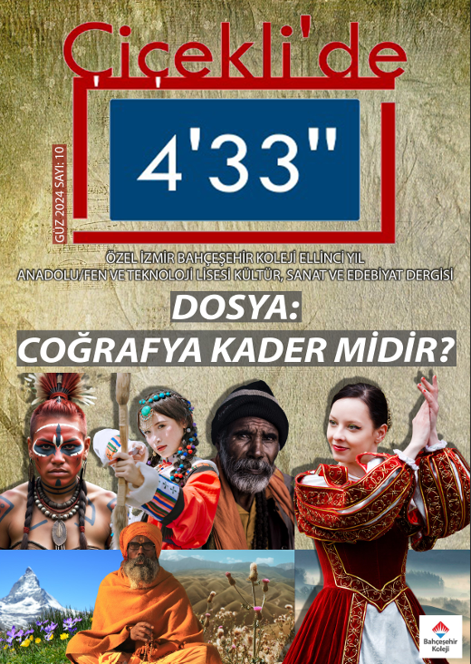
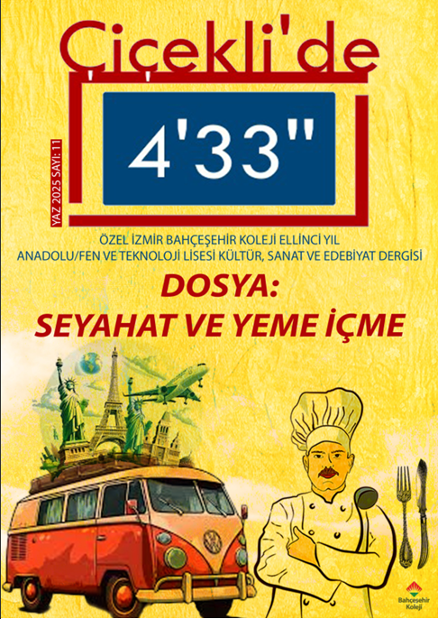

Culture, Art & Literature Journal
Socio-cultural inquiry, narrative journalism, and team-driven editorial production.
The journal takes its distinctive name from John Cage’s radical 1952 avant-garde composition, 4'33"—a piece consisting entirely of environmental sound rather than instrumental notes. This choice reflects our core editorial objective: to encourage readers to step back, quiet the modern noise, and observe local cultures, structural social issues, and historical micro-narratives with analytical clarity.
Rather than publishing standard school updates, our editorial board focused on long-form essays, historical research, and narrative journalism. This platform allowed us to connect academic theories with contemporary societal questions, turning a student publication into a rigorous cultural space.
During the academic year, our team structured and published two standalone seasonal issues, balancing core editorial operations with targeted historical writing.

Autumun 2025 Edition
Issue 10 | Autumn Edition
This issue explored the intersection of geography, history, and socio-political dynamics.

Summer 2025 Edition
Issue 11 | Summer Edition
A deep dive into regional history and geographic logs. For this issue, I took on a direct writing role, authoring the Travelogues (Seyahatnameler) alongside the Bursa Chronicles (Bursa Yazıları), merging cultural archiving with long-form storytelling.
My primary contribution to the Summer edition focused heavily on regional documentation, authoring the travelogues and the Bursa chronicles. This involved analyzing regional architecture and researching historical timelines.